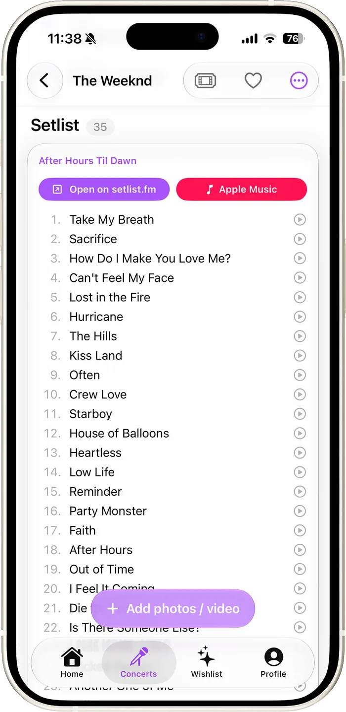
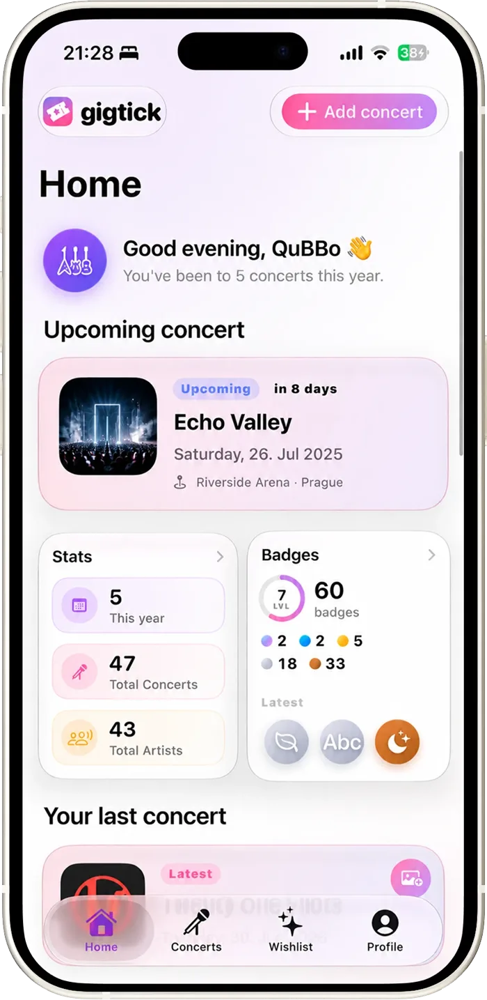
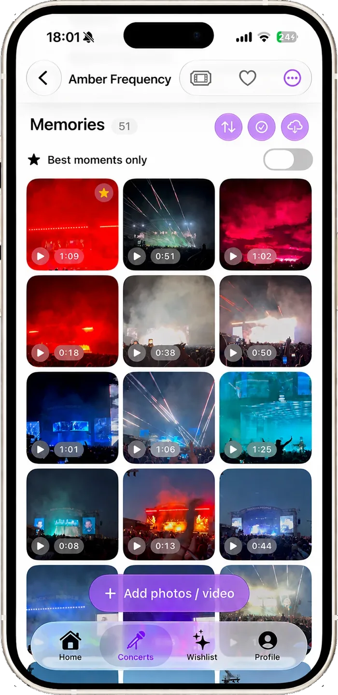
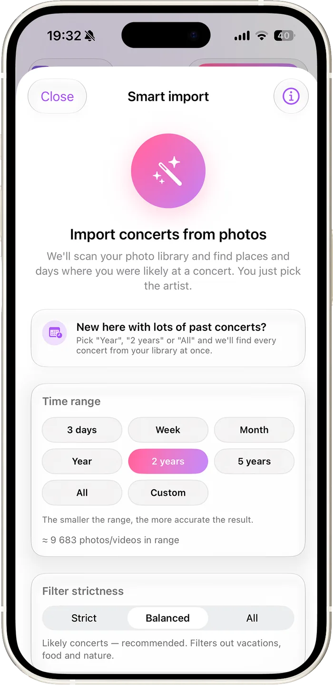
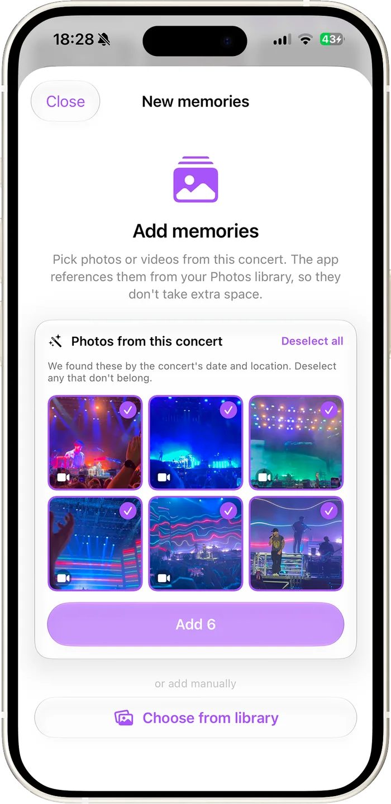
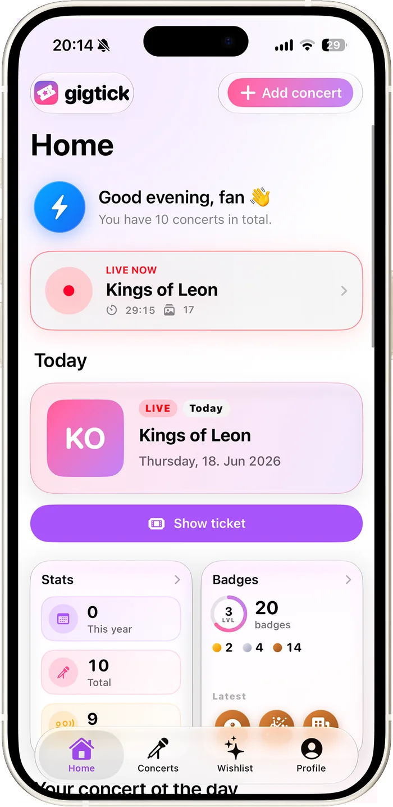
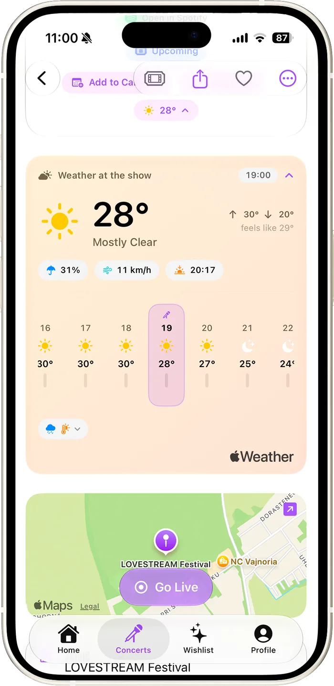
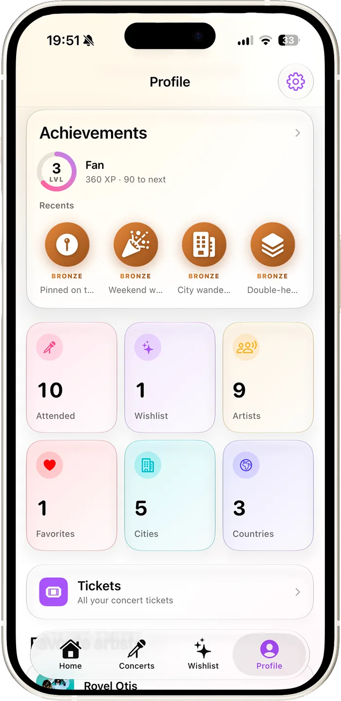

Shows you were at
Photos, videos, the setlist and the stats all land here — and you pick up badges for the milestones you pass.
That's Gigtick, a concert diary for iPhone
It finds the concerts hiding in your camera roll, pulls in the setlist, and keeps them beside the shows you're going to and the ones you still dream about.



What is Gigtick
Gigtick is a diary for the concerts and festivals you go to, right on your iPhone. The shows you've seen, the ones you have tickets for and the ones you dream about, each with its photos, videos and setlist.
Gigtick spots past shows in your camera roll by their date and place. You only type who played.
Open a concert and the photos and videos from that night are already waiting. They stay in your Photos library, so they take no extra space.
See every song they played on the date you were there, and turn it into an Apple Music playlist.
Start Instant Track when the lights go down, and the photos and videos you take land in that concert.
Keep the ticket with the show, get a reminder before it starts and check the weather for the evening.
See how many artists, cities and countries you've collected, and earn badges along the way.
Smart Import
You don't remember every show you've been to. Your photos do. Gigtick reads them on your phone and hands you back the nights it's fairly sure were concerts.
Nothing is deleted, moved or edited in Photos

Your concerts
Every show in Gigtick is one of these. Move a dream to your calendar the day you finally get a ticket, and it carries its photos, notes and artist along with it.
Photos, videos, the setlist and the stats all land here — and you pick up badges for the milestones you pass.
Keep the ticket on the concert, set a reminder, check the weather for the hour the band walks on, then go live on the night.
The bucket list. When the tickets finally drop, one tap moves the whole thing over to Upcoming.
Memories
Open a concert and Gigtick has been there first — it offers the photos and videos taken at that place, on that night, and you untick whatever doesn't belong.

Instant Track
One tap before the first song. Gigtick opens a Live Activity on your Lock Screen and in the Dynamic Island, and every photo and video you shoot that night attaches itself to that concert.
No background location, no always-on tracking

The music
Gigtick pulls the setlist from setlist.fm and puts it on the concert. Saved a show the moment it ended? Refresh it later and the finished set fills itself in as fans complete it.
The rest of it
A concert isn't only the two hours in the room. Gigtick covers the week you spend waiting for it and the years you spend looking back.


Their latest setlist, an archive of earlier shows, and the dates they've announced — plus every gig of theirs you've been to.
Attach the ticket the moment you save the show. It sits with the gig instead of getting lost in a mail thread.
Your year, a concert, a milestone, a badge, your profile or an artist — each gets a card for stories, with one of your own photos behind it.
Artist, opening act, city, country, venue or tour name — across attended, upcoming and dream concerts at once. Accents optional.
A nudge on the anniversary of a night you'd half forgotten, with the photos you took that evening waiting behind it.
Your shows follow you across your own devices through Apple's private CloudKit database. Part of the free app, not something Premium unlocks.
Privacy
Gigtick has no accounts, no user profiles and no server of ours holding your concerts. It's a diary, and a diary belongs to one person.
No account to make, nothing identifying to hand over. Your concerts live in the app's own storage on your device.
Gigtick keeps a reference to the original asset, never a copy. Smart Import analyses your library on the device — no image is uploaded anywhere.
Your shows move between your devices in your own private CloudKit database. Apple holds it, we never see it, and it costs nothing.
Setlist and artist searches send only the name you're looking up, through an anonymous proxy — never your identity, your history or your photos.
The full detail — every permission the app asks for and exactly what it does with it — is in the privacy policy.
Premium
Everything you've read about so far is in the free version. Premium only removes limits — it never locks a feature away behind a wall.
Prices shown in euro and may differ by region — the App Store shows your own. Subscriptions renew automatically until cancelled, and you can cancel any time in your Apple Account settings.
Questions
Yes. The free version is the whole app: unlimited concerts, setlists, playlists, artist pages, tickets, the weather, badges and iCloud sync. Premium lifts three limits (25 photos or videos per concert, 5 concerts from Smart Import, 7 Instant Tracks) and adds the full stats and Year in Review. It's €2.99 a month or €19.99 a year, both start with a free week, and the App Store shows you the price where you live.
No. Your photos and videos stay in your Photos library. Gigtick keeps a reference to each one rather than a copy, so they take no extra space, and Smart Import looks through your library on the device itself, with Apple's Vision framework. Not a single photo is uploaded to us.
No, there's nothing to sign up for. Your concerts move between your own devices through your iCloud, in Apple's private database, and that's free.
iPhone and iPad with iOS 26 or iPadOS 26. On iPhone that means an iPhone 11 or newer, or an iPhone SE from the 2nd generation on.
From setlist.fm, where fans log what was played at every show. Gigtick shows the setlist from the date you were there and links back to it on setlist.fm. With an Apple Music subscription you can turn it into a playlist in your library.
Any time, in your Apple Account's subscription settings. Cancel during the free week and you pay nothing.
English and Slovak. It starts in English, and you can switch in Settings.